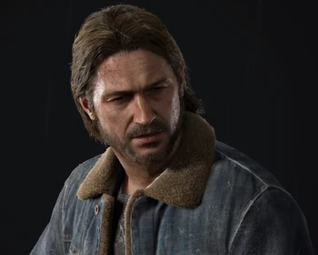
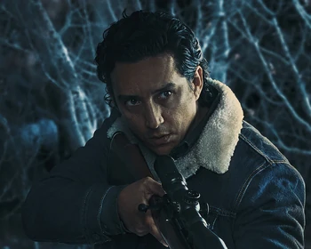

Tommy Miller is a supporting character in the video gameHBO TV-Series, "The Last of Us". He is the younger brother of Joel Miller, the gameshow's protagonist. Tommy is a former member of the Fireflies, a revolutionary militia group fighting against the oppressive military government in a post-apocalyptic world ravaged by a fungal pandemic.
Tommy is initially introduced as the leader of a settlement in Jackson County, Wyoming, where he has established a safe haven for survivors of the pandemic. He is shown to be a competent and respected leader who is well-liked by the people under his protection.← back
TOMMY MILLER


OTHER INFORMATION
VoicedPlayed by:
Age:
Birthday:
Jeffrey PierceGabriel Luna
Unknown
~1980